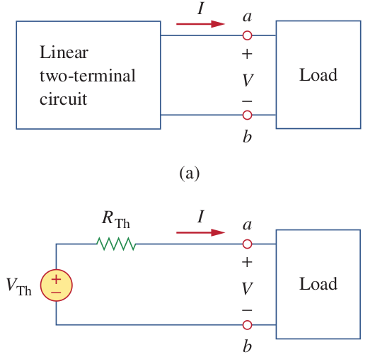
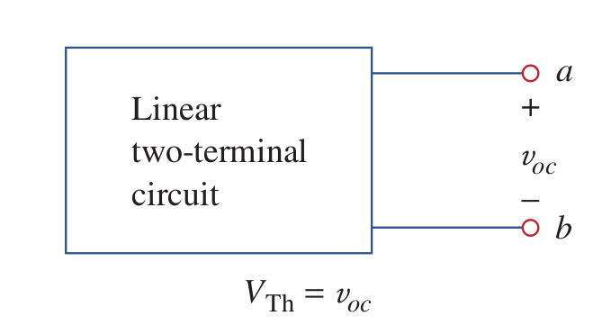
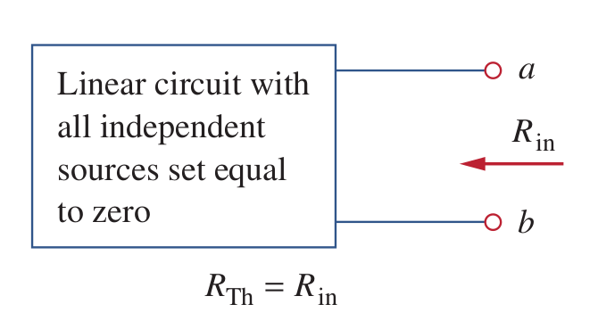
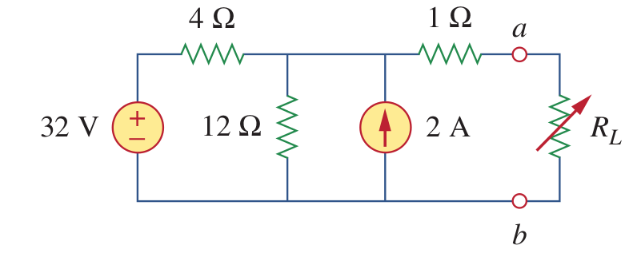
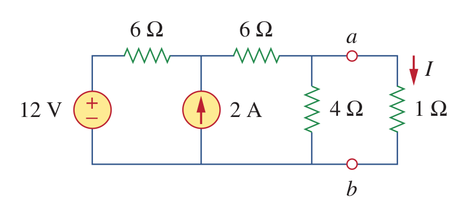
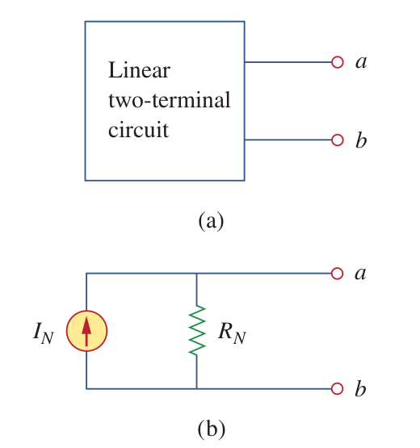

class: center, middle # EE-281 # Thevenin-Norton Theorems # Maximum Power Transfer ## Ozan Keysan [ozan.keysan.me](http://ozan.keysan.me) Office: C-113 <span class="meta">•</span> Tel: 210 7586 --- # Thevenin's Theorem ### Any linear two-terminal circuit can be replaced by a voltage source and a series resistance.  --- # Thevenin's Theorem ### Procedure for finding thevenin equivalent ## 1- Find open circuit voltage (\\(V\_{th}=V\_{oc}\\))  --- # Thevenin's Theorem ### Procedure for finding thevenin equivalent ## 1- Turn off independen sources and find equivalent circuit (\\(R\_{th}=R\_{eq}\\))  --- # Example ### Find the thevenin equivalent of the circuit between a and b.  --- # Example-2 ### Find the thevenin equivalent of the circuit between a and b.  --- # Norton's Theorem ### Any linear two-terminal circuit can be replaced by a current source and a parallel resistance.  --- # Norton's Equivalent #### Norton equivalent is the source transformed version of thevenin equivalent. ## \\(I\_N = \dfrac{V\_{TH}}{R\_{TH}}\\) ## \\(R\_N = R\_{TH}\\) -- ### Short circuit current gives the norton current ## \\(I\_{SC} = I\_{N}\\) --- # Example ### Find the norton equivalent of the circuit between a and b. <img src="./images/norton_ex.png" alt="Drawing" style="width: 700px;"/> --- # More exercise on Monday! --- # Why do they specifiy resistance of a speaker?  --- # Plot the Power in \\(R_L\\) as a function of resistance?  --- #Maximum Power Transfer  --- #Maximum Power Transfer ## \\(P\_{load}\\) is maximum when: ## \\(R\_{load}=R\_{thevenin}\\) ####[Proof](http://en.wikipedia.org/wiki/Maximum_power_transfer_theorem) --- # Any questions? ## You can download this presentation from: [keysan.me/ee281](http://keysan.me/ee281)